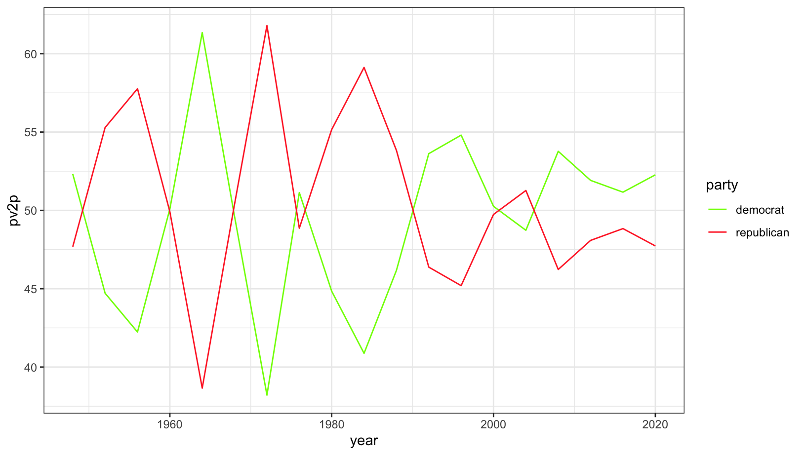
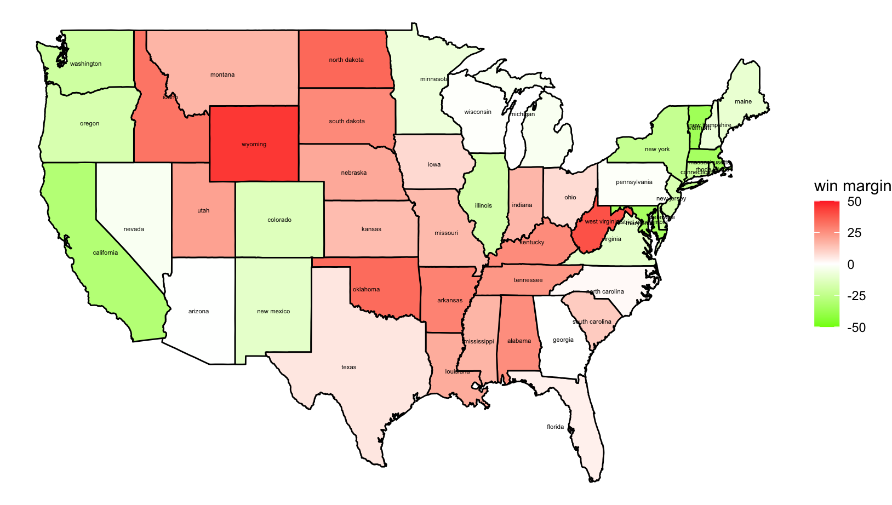
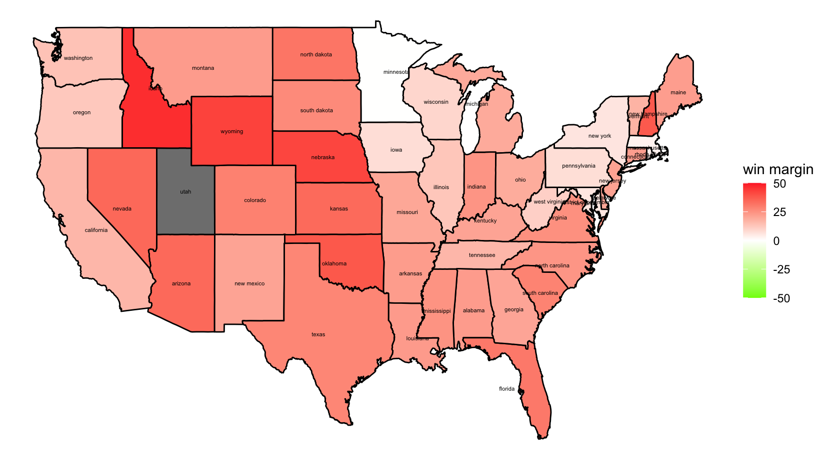
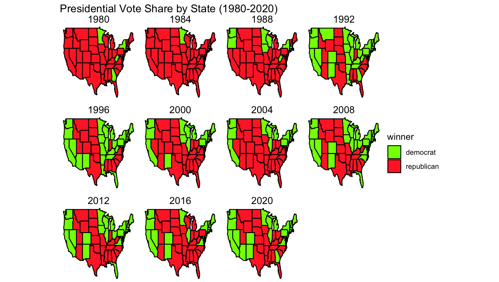

Introduction
As I am a week behind in the course due to accidentally attending German 181’s lecture and enrolling quite late in Gov 1347, this will be a much briefer and less interesting post than I hope to make in the future.
The two questions that I’ll be examining are 1) How competitive are presidential elections in the United States? and 2) Which states vote blue/red and how consistently? Just skimming over the data sets and based on our years of personal experience, it is obvious that presidential elections are competitive.
How competitive are presidential elections in the US?
Using ggplot and the notes from the laboratory session, we can visualize the two-party presidential popular vote over time using a lineplot. Note that moving forward, I will be modeling the democratic party in the Brat Green that Kamala Harris and her social media team have been abusing in their campaign this summer 1. It just felt right. More on that in my Extension Section (see below).

This line plot shows us very clearly that the presidential election has been growing tighter and tighter over the years, with Biden and the Democratic Party barely eking out a victory in 2020 with a 52.3% share of the popular vote.
Abstracting from this further, we can look at the win margins for each state for that year’s election.

Compare this year to that of 1984, when Ronald Reagan was running. This year was a landslide election, but based on the opacity of the states, it wasn’t as competitive as 2020.

My thinking is that the stakes felt much higher in 2020 after the 2016 election, especially given the news cycle beginning to radicalize voters. Obviously, I’d have to run a few more experiments to test this theory, but off the jump that is what I wonder.
I want to further hypothesize that swing states are going to be critical this year’s election for this reason – elections are getting more competitive and Harris/Trump will have to win over voters in those low-margin states to ensure a victory.
Which states vote blue/red and how consistently?
Finally, we wish to analyze which states vote blue/red and how consistently. It is interesting to me that most people now associate specific states with being liberal/republican; it would be nice to map it out to double-check our biases.
(In this figure, I attempted to add state labels to the graphics and realized that it just makes it much harder to read. So here they are without them.)

It is apparent that post-1988 the West Coast and the NorthEast likes to vote Democrat, which does not come as a surprise. Florida, as always, is a swing state, as well as some of its neighboring states.
Blog Extension
For my blog extension, I decided to put labels on the states and choose a custom theme for the blog. The theme was easy to decide on (re: Kamala Brat Summer), but it was a little difficult to figure out how to label the states. I ended up using the geom_text() function, but even then the text would overflow on the states and repeat itself throughout the boundaries of the state. I then realized that the way state_maps are set up, I would have to identify the center of each state and place the label there. I wrote a simple function to take the average of each state’s coordinates and used the returning coordinates to place state labels correctly.